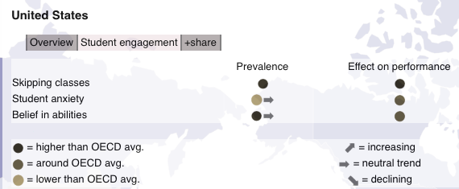

2013-12-03

I wanted to call attention to these interesting PISA results. Turns out that student anxiety in the United States is lower than the OECD average and belief in ability is higher 1. I thought that all of the moves in education since the start of standard’s based reform were supposed to be generating tremendous anxiety and failing to produce students who had high sense of self-efficacy?
It is also worth noting that students in the United States were more likely to skip out on school dand this had a higher than typical impact on student performance. One interpretation of this could be that students are less engaged, but also that schooling activities do have a large impact on students rather than schools being of lesser importance than student inputs.
I have always had a hard time reconciling the calls for higher teacher pay and better work conditions and evidence that missing even just 10% of schooling has a huge impact on student outcomes with the belief that addressing other social inequities is the key way to achieve better outcomes for kids.
This is all an exercise in nonsense. It is incredibly difficult to transfer findings from surveys across dramatical cultural differences. It is also hard to imagine what can be learned about the delivery of education in the dramatically different contexts that exists. The whole international comparison game seems like one big Rorschach test where the price of admission is leaving any understanding of culture, context, and external validity at the door.
P.S.: The use of color in this visualization is awful. There is a sense that they are trying to be “value neutral” with data that is ordinal in nature (above, same, or below), and in doing so chose two colors that are very difficult to distinguish between. Yuck.
The site describes prevalence of anxiety as, “proportion of students who feel helpless when faced with math problems” and belief in ability as, “proportion of students who feel confident in their math abilitites”. Note, based on these defitions, one might also think that either curricula were not so misaligned with international benchmarks or that we are already seeing the fruits of partial transition to Common Core. Not knowing the trend for this data, or some of the specifics about the collection instrument, makes that difficult to assess. ↩
Although it clocks in at 40+ pages, this is a worthwhile and relatively fast read for anyone in education policy on the future of assessment if we’re serious about college and career readiness. There is a ton to unpack, with a fair amount it agree with and a lot ...
“We are trying to work towards late-exit ELL programs so (students) can learn the concepts in (their) native language,” Lusi said. Administrative goals have recently shifted to a focus on proficiency in both languages because bilingual education is preferred, she added.
But instituting district-wide bilingual education would require funding to ...
De Blasio and his advisers are still figuring out how much rent to charge well-funded charter schools, his transition team told me. “It would depend on the resources of the charter school or charter network,” he told WNYC, in early October. “Some are clearly very, very well resourced and have ...
To recap, the first study discussed above established that children from disadvantaged backgrounds know less about a topic (i.e., birds) than their middle-class peers. Next, in study two, the researchers showed that differences in domain knowledge influenced children’s ability to understand words out of context, and to comprehend ...